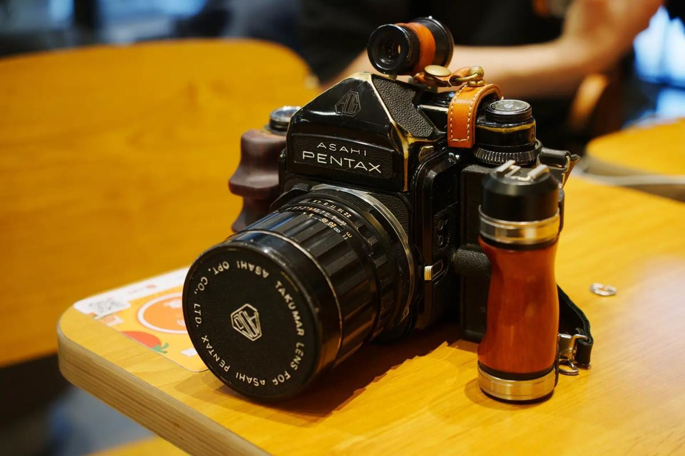

宾得 67

巨型 6×7 单反，人像虚化的胶片神器。
客观评测
宾得 67 于 1969 年问世，6×7 画幅面积约是 135 全画幅的四倍，成像细腻、层次丰富。机身结构类似放大版单反，横走布帘快门 1 至 1/1000 秒，闪光同步 1/30 秒，原生机身无测光，需选配测光棱镜或外置测光表。搭配 105mm f/2.4 标头时景深极浅、虚化过渡自然，被誉为胶片人像利器。缺点是快门震动明显、整机重量超过两公斤，拍摄节奏缓慢。
主观点评
抱着宾得 67 拍照更像操作仪器：巨大的五棱镜、沉甸甸的机身、震动明显的快门，每按一次都需屏息凝神。但当 6×7 底片在放大机下显现，那种过渡细腻、纵深强烈的影像会让人觉得一切都值了。它是无数摄影师的毕业器材，也是胶片时代影楼的主力。今天用它创作，本身就是对慢速工作流的一种坚持。
优点与不足
- 6×7 画幅细节与层次远超 135 胶片
- 105mm f/2.4 人像虚化柔美立体
- 可换镜头与后背，系统扩展性强
- 重量超过两公斤，手持拍摄辛苦
- 快门震动大，三脚架几乎是必需品
参数规格
| 类型 | 6×7 中画幅单镜头反光相机 |
|---|---|
| 画幅 | 约 56×69.5 毫米 |
| 胶片 | 120/220 卷片，一卷约 10 张 |
| 卡口 | 宾得 67 卡口（可换镜头） |
| 镜头 | 常用标头 105mm f/2.4 |
| 快门 | 横走布帘快门，1-1/1000 秒及 B 门，X 同步 1/30 秒 |
| 测光 | 原生机身无测光，需测光顶或外置测光表 |
| 对焦 | 手动对焦 |
| 取景 | 可换五棱镜或腰平取景器 |
| 连拍 | 无 |
| 重量 | 约 2300 克（机身含棱镜） |